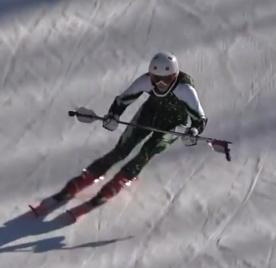

01Bâtons tendus devant
Application
Tenir les bâtons tendus devant soi, à hauteur de bassin et légèrement inclinés vers le bas.
Objectifs
- Garder les épaules à l’horizontale.
- Améliorer l’angulation.
- Garder le haut du corps face à la pente.